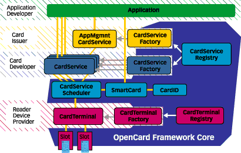
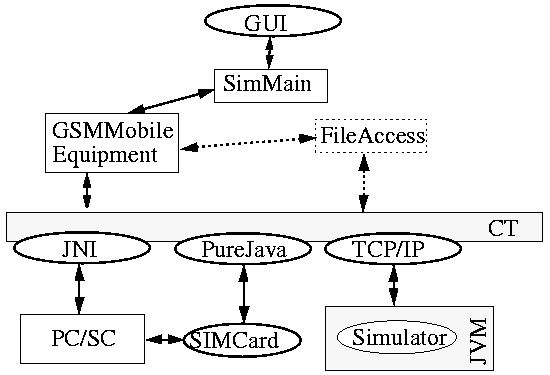
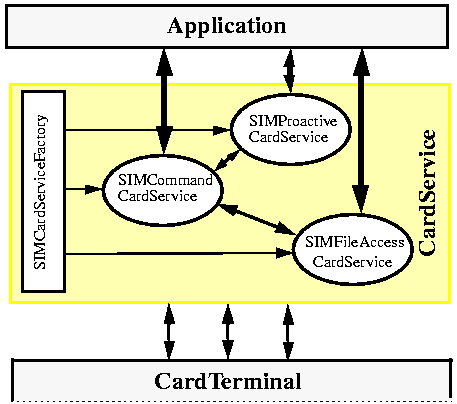
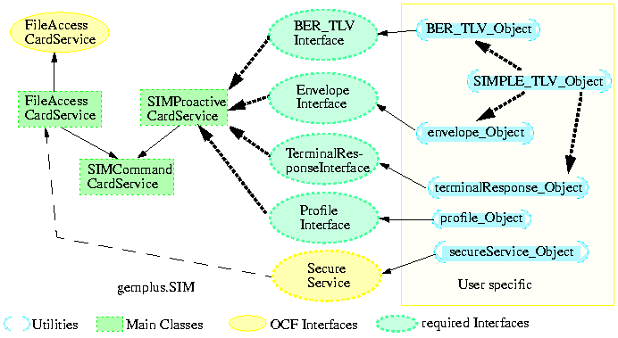

-
GSM Card Access Over
-
OpenCard Framework
-
Nguyen Thanh
Lam
Molag Tomasz
Supervisors:
-
-
Loureiro Sergio
-
Prof. Molva Refik
-
Muller Christophe
(GEMPLUS)
-
-
-
Semester project at the Corporate Communication Laboratory, EURECOM,
France
-
-

-
-
Frameworks are today's hot topics and so are Smart Cards. The OpenCard
Consortium provides a solution, called OpenCard Framework, to interact
with Smart Cards. GSM cards are particular smart cards and till now the
OpenCard Framework does not support them.
Contents:
1.0 Project Description
2.0 OpenCard Framework
- Overview
2.1 Introduction
2.2 Description
3.0 SIM Standard (GSM 11.11)
3.1 Files
3.2 Functions
4.0 SIM
Application Toolkit Standard (GSM 11.14)
4.1 Profile Download
4.2 Proactive SIM
4.3 Terminal Response
4.4 Envelope
4.5 SIMPLE
TLV Data Object
4.6 BER TLV Object
5.0 Actual SIM Access
6.0 Provided Solution
6.1 Overview
6.2 SIMCommandCardService
6.3 SIMFileAccessCardService
6.4 SIMProactiveCardService
6.5 Helper Classes
6.5.1 Class
SIMPLE_TLV_Object
6.5.2 Class
BER_TLV_Object
6.5.3 Class
envelope_Object
6.5.4 Class
profile_Object
7.0 Simulation
8.0 Enhancements
1.0 Project Description
The project's goal was to develop one OpenCard Framework component, called
CardService, to manage the access to a GSM card (SIM). The access to the
SIM is specified on the GSM standards 11.11 (SIM) and 11.14 (SIM Toolkit).
Notice: This document request knowledge of the JAVA language.
2.0 OpenCard Framework
- Overview
2.1 Introduction
Today it is too expensive to write applications that use smart cards. Each
application is a proprietary solution typically restricted to:
-
a limited subset of card readers
-
a limited subset of smart cards
-
a limited number of issuers
-
mostly one platform.
Hence the maintenance and extensibility of such an application is very
difficult and expensive. But also the penetration of new cards and readers
into the market is handicapped by those circumstances.
The OpenCard Consortium, formed
by the major manufacturers of smart card products, offers a solution to
overcome those problems - the OpenCard Framework. The latest version is
OCF1.1 .
2.2 Description
Before describing the OpenCard Framework itself, some notions have to be
introduced for a better understanding.
The first notion is framework.
A framework is a program solving a problem. Frameworks can be customized
easily. Indeed, the program composing the framework contains "holes", which
have to be filled to customize the program for user needs.
The second notion is design patterns.
A design pattern is a common way for application designers to solve
a well known problem. The OpenCard Framework includes two patterns :
-
Singleton pattern : The program element, which respects this pattern
is unique within a program. It provides a global point of access to other
elements.
-
Factory pattern : This pattern provides an interface for dynamic
creation of items. Those items and their factory can be user specific.
A factory knows how to create different items.
FIGURE 1. Factory pattern
The following figure (Figure 2) gives a global view of the entire OpenCard
Framework.

FIGURE 2. OpenCard Framework
As stated in the project description, the knowledge of the JAVA language
is required, because the whole OpenCard Framework is written in JAVA. JAVA
was chosen because it is hardware and platform independent. Therefore this
framework can be used on a very large number of computers.
The OpenCard Framework is composed of three elements:
- OpenCard Framework Core
- CardServiceRegistry
- CardTerminalRegistry.
The main part of the framework is the Framework Core. It includes a CardServiceRegistry
and a CardTerminalRegistry. Those two classes are implemented using the
singleton pattern. The customizable part of the framework, the
"holes", are CardTerminal and CardService. Both elements use the
factory pattern. The CardTerminal is a class that implements all methods
needed to access the smart card inserted into the card reader. Usually
it is delivered together with the card reader. The CardService offers services
to access and manage the contents of the smart card itself, and should
be provided together with the smart card.
3.0 SIM Standard (GSM 11.11)
ETSI document number: TS 100 977 V6.1.0 (1998-07)
Defines the interface between the Subscriber Identity Module (SIM) and
the Mobile Equipment (ME) for use during the network operation phase of
GSM.
3.1 Files
The files are organized in a hierarchical structure and are either Master
File (MF), Dedicated File (DF) or Elementary File (EF). The MF is an equivalent
to the root of a file system and is unique on a card. DF is an equivalent
to a directory. Functions described in this document allow to read, modify,
select, update and search files. Unfortunately there are no functions to
create a file.
After the Answer to Reset (ATR), the MF is implicitly selected and becomes
the current directory. Each file may be selected by using the SELECT function.
A DF shall be selected prior to the selection of any of its EFs and the
selections are made using the file ID. The access is restricted by conditions
of different levels.
3.2 Functions
All functions are mapped to Application Protocol Data Units (APDU), which
are used by the transmission protocol. There exist two sorts of APDU:
-
Command APDU: from the ME to the SIM, consisting of the APDU class, instruction
number, parameters for the instruction and a data field
-
Response APDU: from the SIM to the ME, consisting of a data field, and
two status words, SW1 and SW2.
Those status words indicate if the previous command has been well performed
or if an error occurred.
Functions are provided for:
-
file handling
-
security features
-
GSM algorithm
-
SIM Application Toolkit.
4.0 SIM Application
Toolkit Standard (GSM 11.14)
ETSI document number: TS 101 267 V6.1.0 (1998-07)
The document defines the interface between the Subscriber Identity Module
(SIM) and the Mobile Equipment (ME), and mandatory procedures, specifically
for "SIM Application Toolkit".
SIM Application Toolkit is a set of commands and procedures for use
during the network operation phase of GSM, in addition to those defined
in GSM 11.11.
The following mechanisms have been defined to interact with the ME:
-
Profile download
-
Proactive SIM
-
Terminal Response
-
Envelope download.
4.1 Profile Download
Profile download provides a mechanism for the ME to indicate its capabilities
to the SIM. The ME knows the capabilities of the SIM by reading the files
SIM Service Table and EFPhase.
The profile is a bit array of supported facilities. This bit
array is the contents of the Command APDU send to the SIM in this command.
4.2 Proactive SIM
Proactive SIM gives a mechanism whereby the SIM can initiate actions to
be taken by the ME like display text, play tone etc. .
The ME is always the "master" of the communication. The SIM indicates
by returning SW1 = 0x91 in the Response APDU
to a previous command, that it has information to be send. The ME then
uses the function FETCH to retrieve the data from the SIM. After treating
the information, the ME answers with the function TERMINAL RESPONSE.
The data field of the Response APDU to a FETCH command contains a BER
TLV.
4.3 Terminal Response
Once the ME has made its attempt to execute a proactive command from the
SIM, the ME shall inform the SIM of the result by using TERMINAL RESPONSE.
This message includes command details, the number of the command, a general
result and sometimes more specific information.
The data field of the Command APDU TERMINAL RESPONSE consists of
SIMPLE TLV data objects. The command header is specified in GSM 11.11.
Length (A+B+C+D) is indicated by P3 in the Command APDU header.
| Description |
Contents |
Mandatory / Optional |
Length
|
| Command details |
SIMPLE TLV |
M |
A
|
| Device identities |
SIMPLE TLV |
M |
B
|
| Result |
SIMPLE TLV |
M |
C
|
| Additional information |
SIMPLE TLV |
requested by some proactive commands |
D
|
TABLE 1. Structure of TERMINAL RESPONSE
4.4 Envelope
Envelope is a structure used to pass data from the ME to the SIM. This
due to an answer of a proactive command or initiated by the network. Envelopes
exist for different procedures:
-
short message (SMS) download to the SIM
-
menu selection after the proactive command SET UP MENU
-
call control by SIM
-
short message control by SIM
-
event download
The data field of the Command APDU of this function contains a BER TLV.
4.5 SIMPLE TLV Data Object
A SIMPLE TLV data objects consists of a tag, a length indicator, which
gives the number of bytes in the value field and a value part of variable
length. SIMPLE TLV data objects may be transferred across the interface
in both directions. If the length X is bigger then 127 bytes, the length
field becomes two bytes long - the first byte holds the value '81' the
second X.
| Position |
Description |
Length in bytes |
| 1 |
Text string tag |
1
|
| 2 to (Y-1)+2 |
Length(X) |
Y (1 or 2)
|
| (Y-1)+3 |
Data coding scheme |
1
|
| (Y-1)=4 to (Y-1)+X+2 |
Text string |
X-1
|
TABLE 2. Example of SIMPLE TLV: Text string
4.6 BER TLV Data Object
A BER TLV object consists of a tag, a length field and a value. The object
should be conform to the Basic Encoding Rules of ASN.1. If the length of
the value field is bigger then 127 bytes, the length field becomes two
bytes long - the first byte holds the value '81' the second the length
of the value. In this specification, all BER TLV data objects are "primitive",
because the value part consists only of SIMPLE TLV data objects.
| Description |
Contents |
Mandatory / Optional |
Length in bytes |
| BER tag |
byte |
M
|
1
|
| Length(A+B+C+D+E) |
byte(s) |
M
|
1 or 2
|
| Command details |
SIMPLE TLV |
M
|
A
|
| Device identities |
SIMPLE TLV |
M
|
B
|
| Alpha identifier |
SIMPLE TLV |
O
|
C
|
| Tone |
SIMPLE TLV |
O
|
D
|
| Duration |
SIMPLE TLV |
O
|
E
|
TABLE 3. Example of BER TLV: Play tone
5.0 Actual SIM Card Access

FIGURE 3. Current access of SIM card
FIGURE 3 shows the current SIM access proposed by GEMPLUS. The class
SimMain is the engine of the SIM Application Toolkit. It takes the predefined
Command APDU from an indicated file and sends them to the card. Received
Response APDUs are treated by the class GSMMobileEquipment. The results
are displayed on a graphical user interface (GUI) based on JAVA Beans.
The communication with the card itself takes place over an already written
CardTerminal for SIM cards. The CardTerminal in turn is implemented in
Pure JAVA to access the card reader directly. To access the card reader
over a Windows based Card Access System PC/SC, a JAVA Native Interface
(JNI) is offered. The PC/SC communicates with the card reader over the
serial interface. There also exists a "simple" SIM simulator applet which
may be executed in a JAVA Virtual Machine (JVM) on a host. The communication
takes place over the TCP/IP stack. The applet is not a full simulation
of a GSM card but only designed to demonstrate the cooperation with SIM
cards.
To write programs which interact with the card, one is still obligated
to know the exact contents of APDUs. This is not at all user friendly.
6.0 Provided Solution
6.1 Overview

FIGURE 4. Proposed structure
The design of our CardService requires four elements : three CardServices
and one Factory. We divided SIM/PROACTIVE into three CardServices to respect
the philosophy of groups with similar functions. We could have done the
CardService as one class, but it would not have been easy to understand
and to use. The reasons that lead us to use three instead of one CardService
are following:
The SIMCommandCardService is the main class of our CardService. Indeed,
it implements all the functions described in the GSM 11.11 technical
sheet . This CardService is placed on a very low layer, because all commands
return an APDU (Application Protocol Data Unit, c.f.
GSM 11.11 for more details). We decided to make it a CardService to
allow other developers to write CardServices similar to those we propose
based on SIMCommandCardService.
The SIMFileAccessCardService offers access to the files embedded in
the file system on the SIM. This interface is a high level access standardized
by the OpenCard Consortium. SIMs are not ISO 7816-4 compliant. Therefore
the file access to SIMs can not be ISO compliant. The reason is that SIM
cards do not provide all features defined in ISO 7816-4 standard. Principally
SIMs use different error codes and application IDs are not supported. To
simplify the use of the file system on a SIM card, we implemented a SIMFileAccessCardService
that respect the proposed interface of ISO 7816-4 file access.
We decided to place SIMProactiveCardService on the CardService layer.
In the beginning this service was included in the SIMCommandCardService
to allow an easier way to use the four SIM Toolkit commands. As stated
before, we decided to have the SIMCommandCardService implementing only
the commands in GSM 11.11. So we divided our former SIMCommandCardService
into two parts - the actual SIMCommandCardService and the SIMProactiveCardService.
FIGURE 5 represents all the classes implemented during the project.
In the figure one will find several kinds of arrows with different meanings.
A plain arrow indicates that the class/interface at the head of the arrow
is extended/implemented. A dotted arrow means that the class needs implementation
of those interfaces in order to be functional.

FIGURE 5. Overview of our classes/interfaces
FIGURE 5. also shows that the SIMProactiveCardService requires four
different interfaces (BER_TLV, envelope, terminal response and profile).
This will be explained in the SIMProactiveCardService,
right after the SIMCommandCardService
and the SIMFileAccessCardService.
6.2 SIMCommandCardService
This class is the heart of our CardService. It provides a low level interface
to communicate with the smart card. Indeed, all methods used here require
parameters as close as possible to those defined in the GSM 11.11 technical
sheet. The following table describes the command READ BINARY:
|
COMMAND
|
CLASS
|
INS
|
P1
|
P2
|
P3
|
|
READ BINARY
|
'A0'
|
'B0'
|
offset high
|
offset low
|
length
|
TABLE 4. READ BINARY Command APDU
Response parameters / data retrieved from the SIM:
|
Byte(s)
|
Description
|
Length
|
|
1 - length
|
Data to be read
|
length
|
TABLE 5. Data part in Response APDU to read binary
command
This command has the following prototype:
public Response APDU readBinary( short offset, byte length )
;
All other commands in GSM 11.11 are of the same prototype. Offsets
given in two different bytes are merged into one short number. If one or
more fields (CLASS, INS, P1, P2 or P3) are fixed in the technical sheet,
they do not need to be delivered to the corresponding method in the CardService.
All responses from the methods in this CardService are Response APDUs.
THIS CARDSERVICE THROWS NO EXCEPTIONS BY ITSELF. It forwards exceptions
thrown by the CardChannel or CardTerminal. ALL ERRORS FROM THOSE METHODS
ARE CODED IN THE RESPONSE APDU (SW1 & SW2) and should be caught by
the user. Therefore the interface SIMResponseAPDUCode is provided.
We added two public methods not defined in GSM 11.11 to this CardService.
Those methods are proactiveCommandWaiting() and getProactiveCommandLength().
The first one returns true if there is a proactive command in waiting.
If so, the ME should perform a FETCH command as soon as possible. The second
method indicates the length of the proactive command in waiting. This value
is requested by the FETCH function to allocate a buffer of sufficient size.
6.3 SIMFileAccessCardService
This CardService implements a high level interface for access to the file
system of a SIM card. IBM already offers a FileAccessCardService for the
MFC cards. It would have been easy to reuse this service for the GSM cards.
Indeed, IBM has developed a CardService that uses ISO 7816-4 commands.
In the beginning of the project we tried to reuse as many existing classes
of the OpenCard Framework as possible. So we decided to study the MFC architecture
to determine if it could be reused for this project. But unfortunately
the MFC classes were designed upon a different approach. Although the CardService
of IBM extends the OpenCard CardService, it is too integrated to be useful
for other purposes. For instance the classical CardChannel is extended
to allow encryption and all CardServices of IBM use this modified CardChannel.
GSM cards do not provide encryption yet and therefore we could not reuse
the code of IBM. So we decided to construct a total new FileAccessCardService.
Let's turn back to the description of the SIMFileAccessCardService.
This class extends the SIMCommandCardService and implements the FileAccess
interface proposed by OpenCard Framework. Another point is the Secure Service.
This part has to be explained particularly. The FileAccess interface extends
another interface, the secure service interface. So SIMFileAccessCardService
has to provide all methods in this interface.
The secure service interface is composed of only one method: provideCredentials(SecurityDomain,
CredentialBag). Our implementation of this method stores domain and credential
bag in private variables. If a user likes to use the interface in a different
manner, he has to write a class implementing this method and replace
the default implementation with its class by calling the method setSecureService().
This class needs another class as parameter, that provides the secure service
interface.
Another method is to provide getSecureService which returns the secure
service class used with the CardService.
Remark: Each file possess access rights (CHV1, CHV2, ...) for writing,
reading and modifying the file. At the moment we do not provide any functions
to obtain the access condition list nor high level functions to fulfill
those conditions.
In this CardService all returned codes from SIMCommandCardService are
transformed into exceptions if they indicate an error.
All the exceptions are organized as a tree. A tree allows an easier
handling of exception. All exceptions in SIMFileAccessCardService and SIMProactiveCardService
extends from SIMCardServiceException. All errors of the SIM are grouped
to families. GSM 11.11 technical sheet defines six errors families:
no errors
postponed commands
memory management errors
referencing management errors
security management errors
application independent errors
We provide four exception classes which are parents of all errors in
each family.
6.4 SIMProactiveCardService
In the SIMProactiveCardService all functions are used by the SIM Application
Toolkit. This CardService extends the SIMCommandCardService which is the
holder of all commands to communicate with the CardTerminal. Because there
were no interface defined yet by the OpenCard Consortium, we were free
to choose the hand over parameters.
We defined four methods:
-
public void profileDownload( Profile_interface profile )
-
public byte[] envelope( Envelope_interface envelope)
-
public void terminalResponse( TerminalResponse_interface terminalresponse)
-
public Enumeration fetch( int length, BER_TLV_interface ber ).
As one can see, we only pass interfaces as parameters. This way the
implementation of the parameters may be replaced without having to change
the CardService. Upon the interfaces we built our helper classes,
which are explained later in this document. All interfaces, except
BER_TLV_interface, include two methods getBytes() and getLength(). The
first method requires the class to return the relevant information (header
& data) as a byte array. The method getLength() returns the entire
length of the byte array.
For the BER_TLV_interface, there are three methods:
-
constructBER_TLV( byte[] data ) is here to pass the data from fetch
to the user's handling class
-
getNbOfObjects() returns the number of objects found within the retrieved
data
-
Object readObject( int index ) return a class representing one object.
The handling of those objects to retrieve information like proactive
command is left to the user.
All four methods throw CardServiceExceptions in case of unexpected status
words in the Response APDU of the SIM. The exceptions are identically to
the exceptions of the SIMFileAccessCardService.
6.5 Helper Classes
The helper classes are our implementation of interfaces used by CardServices
in order to run a simulation. We do not describe all the functionality
of each class. We will only give the reasons why we implemented those classes.
6.5.1 Class SIMPLE_TLV_Object
This class is used for the creation and parsing of SIMPLE TLVs. All constants
are defined in the interfaces:
-
SIMPLE_TLVtagCode
-
deviceCode
-
toneCode
-
intervalCode.
This class throws SIMPLE_TLV_Exceptions if an unauthorized access has
been attempted.
6.5.2 Class BER_TLV_Object
This class is used for the creation and parsing of BER TLVs received from
the SIM. A BER TLV is built from the data field of the Response APDU of
the SIM command FETCH. As BER TLVs used in a GSM session consist of SIMPLE
TLVs, this class breaks the BER TLV into SIMPLE TLV.
6.5.3 Class envelope_Object
This class is used if data has to be sent to the SIM. We did not reuse
the BER_TLV_Object class for this purpose to clearly distinguish between
data from the SIM and data from the ME. Beside the constructor hardly any
methods are available.
6.5.4 Class profile_Object
This class gives the user a high level interface to construct the profile
bit array. The user will set/unset features by using two methods:
-
setFeature( int )
-
unSetFeature( int ).
The parameter of those methods are defined in the profileCode interface.
7.0 Simulation
To test the CardService, we used a GEMPLUS card reader GCR410-X and two
GSM cards programmed for this test. One card contained the proactive command
DISPLAY TEXT with the text string "Hello". The other card contained the
proactive command SET UP MENU. Both cards were SIM Phase 2+ cards
in order to issue proactive commands. An application handling proactive
commands has to perform the following steps:
-
perform CHV test
-
select file DFgsm (':7F20')
-
select file EFsst ('6F38')
-
check if the service n.29 is activated (Proactive SIM)
-
if proactive commands are not supported, suspend proactive command handling
-
download the terminal profile to the SIM card
-
test if a proactive command is waiting
-
send the command FETCH
Our simulator enters directly at step six after having performed the
CHV verification, because we know well that both cards were programed to
support proactive commands.
Right after the downloading of the profile, there is a proactive command
waiting to be processed. But it is not fetched immediately. The simulator
enters an infinite loop. The first instruction the simulator should send
is a status command. This status command should be performed on idle time
to keep the connection with the SIM open and to test whether a proactive
command is waiting or not. A waiting command is fetched and processed.
Afterwards the simulator enters the loop again.
The simulator processes only two proactive commands SET UP MENU and
DISPLAY TEXT.
8.0 Enhancements
CardServices could be to used to provide an easier development of software
shipped with a mobile equipment. If all mobile equipment were based on
OpenCard Framework, applications could be reused easily in different mobile
equipment without any changes.
One can imagine to write an application that customizes your mobile
equipment. All relevant data are stored as commands on the GSM card. Now,
if the SIM is inserted into a mobile equipment, the embedded application
will perform a set up of an environment independent of the used mobile
equipment.
Other enhancements to this project could have been done and have not
been done because of the lack of time. For example a class that gives a
list of access conditions depending on a given file would help the programer
to make automatic request in order to fulfill those conditions. Another
useful helper would be to finish the simulator and to make it a full proactive
command parser.